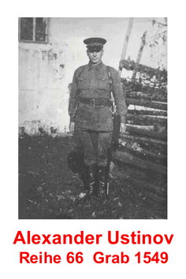
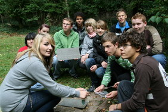
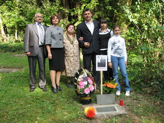
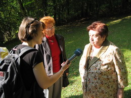

НАВСЕГДА В МОЕЙ ПАМЯТИ!
(Окончание. Начало на первой полосе)
Шли годы. Открылась часть старых архивов. И вдруг на один из очередных запросов в Подольск пришёл ответ, что Александр Устинов умер в немецком плену 30 апреля 1945 г. (всего за несколько дней до окончания войны!). Место захоронения неизвестно. Конечно, появилось огромное желание его найти. Единственная организация, которая реально смогла в этом помочь, - это «Жить и помнить». Терентьев А.М. узнал, что А.Устинов прошел через несколько лагерей военнопленных на территории Германии, нашел книгу умерших в лазарете одного из лагерей в г. Херлесхаузен. Записи вел лагерный врач. Согласно им А.Устинов умер 30.04.1945 г. в 12 часов 30 минут от туберкулеза легких, далее указывались ряд и номер захоронения на кладбище. Эта книга умерших была вывезена из Германии и много лет хранится в архиве в Подольске. Сотрудники архива не знают, какими «сокровищами» они обладают. Видимо, большая загруженность не позволяет им выполнить их основную функцию – сохранить и поделиться информацией с теми, кто в ней нуждается. Не знала об этой книге и немецкая сторона. Наше обращение к мэру г. Херлесхаузен Гельмуту Шмидту с сообщением об этом явилось для него удивительным открытием.
В этом городе сохранены давние традиции бережного отношения к захоронениям, и во многом это связано с именем Карла Фера, мэра города (с 1924 по1945 и с 1948 по 1956 годы). Вот что рассказал об этом Гельмут Шмидт: «Советские военнопленные были почти во всей Германии похоронены безымянными на окраинах кладбищ или за пределами лагерей. Они разделили судьбу многих, кого человеконенавистническая идеология нацистского режима рассматривала как неполноценных, и даже с мертвыми обходилась недостойно. Мэр Фер остался непреклонен, несмотря на то, что для него это было небезопасно, и требовал от лагерного врача свидетельства о смерти в соответствии с законом».
«Кто в моей общине умрет, будет согласно закону зарегистрирован и похоронен», - такова была моральная позиция мэра. Карл Фер поступал так не столько из чувства обязанности, сколько из сочувствия. «Когда я ещё совсем молодым отправлялся на первую мировую войну, моя мать сказала мне: «Не забудь, мой мальчик, у французов и русских есть тоже матери дома, которые также боятся за своих сыновей, как и я за тебя». Этими словами объяснял он свое участие в судьбах советских военнопленных. Мужественная и достойная восхищения не только по сегодняшним меркам позиция. Карл Фер был единственным мэром в Германии, который после войны смог предоставить Народному союзу Германии по уходу за военными захоронениями списки с именами и датами смерти всех умерших военнопленных, которых он позволил достойно захоронить. За свои заслуги после войны Карл Фер был награжден медалью, в его честь названа одна из улиц города.
В сентябре 1959 состоялось открытие и освящение нового кладбища в Херлесхаузене в его нынешнем виде, туда был перенесены останки советских военнопленных из близлежащих мест. На кладбище покоится прах 1593 советских воинов, умерших в лагере в 1942-1945 годах. Немцы бережно ухаживают за могилами. Кроме того, добровольцы постоянно ведут поисковую работу для того, чтобы точно установить полные имена всех захороненных, ведь на многих табличках до сих пор сохраняется надпись «unbekannt» - «неизвестный». Александр Устинов значился в списке под номером 1549 как Алекс неизвестный. Благодаря записям в книге умерших в лазарете удалось установить его точное место захоронения. Кроме моего деда эта новая информация позволила узнать имена ещё 31 человека, похороненного на этом кладбище. Бургомистрат города заменил на новые таблички на всех могилах со вновь установленными именами воинов. Эта смена была приурочена к 50-летней годовщине со дня открытия нового кладбища. На праздничные мероприятия по этому поводу была приглашена наша семья.
Эта поездка была волнительной для всех нас и, в первую очередь, для старшей дочери Александра Людмилы. Когда он уходил на фронт, ей было 15 лет. Многие годы она посвятила поиску сведений об отце, и вот теперь представилась возможность посетить его могилу. Не буду рассказывать о подготовке к поездке, пришлось собрать довольно большое количество документов, но, не пугайтесь, будущие путешественники, это все реально и возможно.
Херлесхаузен – небольшой городок с населением около 3 тысяч человек в земле Гессен, в самом центре Германии. Праздничные мероприятия проводились в субботу. В 16 часов состоялась служба в церкви, которую проводили совместно 3 конфессии: протестанты, католики и баптисты. Церемония была очень трогательной, сопровождалось пением хора, зажжением свечей в память о погибших. Все, кто присутствовал на службе, а это более 300 человек, затем были доставлены автобусами на кладбище. Там состоялся торжественный митинг, в котором участвовали мэр города и главный организатор торжества Гельмут Шмидт, руководители немецкого Красного Креста, представители администрации района и земли Гессен, духовой оркестр, мужской хор, священники. Школьники 10 класса заранее готовились к этому мероприятию и сшили мешочки, в которые положили землю с 45 могил воинов, уроженцев Тверской земли, покоящихся на этом кладбище. Их они передали представителю организации «Жить и помнить» Леониду Мусину, также присутствовавшему на торжествах. Волнующий момент, когда дети положили новые таблички на могилы воинов со вновь установленными именами, никого не оставил равнодушным.
Больше всего меня поразило сочувствие и сопереживание со стороны простых немецких людей, которое они выражали по поводу прошедших событий. Многие присутствовавшие на кладбище не могли сдержать слез, слушая выступления на митинге.
Рассказ о событиях давно ушедших дней был продолжен в здании бургомистрата, куда были приглашены все присутствовавшие на митинге. Гельмут Шмидт поведал о военных событиях в Херлесхаузене, сопровождая свой рассказ многочисленными фотографиями. Удивительно, что жители Германии бережно хранят информацию о тех, с кем воевали их предки, собирают по крупицам сведения о совершенно чужих им людях. Слово было предоставлено Людмиле Устиновой, которая рассказала о тяготах и лишениях, пережитых в военное время, и о длительных поисках своего отца.
Также выступила жительница Херлесхаузена Берта Шелленберг. В годы войны она была подростком и хорошо помнит рассказы сотрудников лагеря о жизни и работе пленных. Этот лагерь был специально создан для больных, по сути их привозили сюда умирать, и редко, кто находился там дольше нескольких месяцев. Большинство гибли от туберкулеза. Им оказывалась минимальная медицинская помощь, кто мог, продолжал работать на строительстве дороги. Снабжение продуктами резко ухудшилось после прихода 2 апреля 1945 года американских войск. Заключенные вынуждены были сами искать пути спасения. Кто-то из них обменял на продукты в семье Берты свои грубые башмаки и ткань, которая использовалась в лагере. Немка многие годы бережно хранила эти предметы. В этот раз она подарила Людмиле Устиновой башмак и кусочек той ткани. Это вещи, которые достойны занять свое место в музее, ведь когда-то они принадлежали советским военнопленным.
До позднего времени длился вечер воспоминаний. Угощение, картошка в мундире, напоминала о военных лишениях. После окончания официальной части к нам подходило много немцев, которые рассказывали о своих родственниках, погибших или пропавших под Сталинградом, Ржевом или в других местах, высказывали сочувствие. Кто-то просил помочь найти их могилы. Кто-то просто хотел сказать несколько приветственных слов или пожать руку. Был среди них и 86-летний сын того самого Карла Фера. В годы войны он сражался в Италии. В своем преклонном возрасте он остается оптимистом и горячо приветствует работу по увековечению памяти советских военнопленных.
Впечатления об этих событиях навсегда останутся в моей памяти. Немцы показывают нам пример того, как надо ухаживать за кладбищами, где покоятся погибшие воины, в том числе и бывшие противники. Люди, не будьте равнодушными! Положите цветок на могилу павшего воина. Быть может, где-то там, на далекой стороне, точно также кто-то другой принесет цветы и почтит память вашего близкого.
Ирина Иванова
|